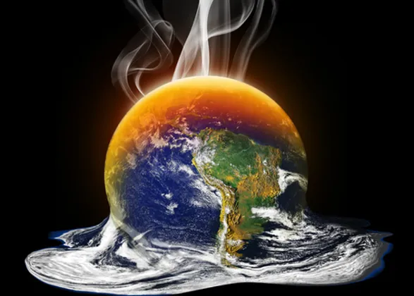

Autor: Pedro Cabral
Data de Lançamento do Artigo: 2 de abril de 2017
Aquecimento Global - Desafios e Soluções para um Futuro Sustentável
O aquecimento global é um dos maiores desafios enfrentados pela humanidade atualmente. Esse fenômeno, causado principalmente pela emissão excessiva de gases de efeito estufa, tem impactos devastadores no clima, na biodiversidade e na vida humana. Aumento das temperaturas, derretimento de geleiras, elevação do nível do mar e eventos climáticos extremos são apenas algumas das consequências visíveis do aquecimento global.
Para enfrentar essa crise, é fundamental adotar medidas urgentes para reduzir as emissões de gases de efeito estufa, investir em energias renováveis, promover a eficiência energética e adotar práticas sustentáveis em todos os setores da sociedade. Governos, empresas e indivíduos desempenham um papel crucial na luta contra o aquecimento global. A transição para uma economia de baixo carbono é essencial para limitar o aumento da temperatura global e proteger o planeta para as futuras gerações.
Além disso, a conscientização e a educação são fundamentais para engajar as pessoas e incentivá-las a adotar escolhas sustentáveis. A proteção das florestas, a preservação dos ecossistemas marinhos, a redução do desperdício, o consumo responsável e a promoção da sustentabilidade em todas as áreas da vida são medidas importantes para combater o aquecimento global.